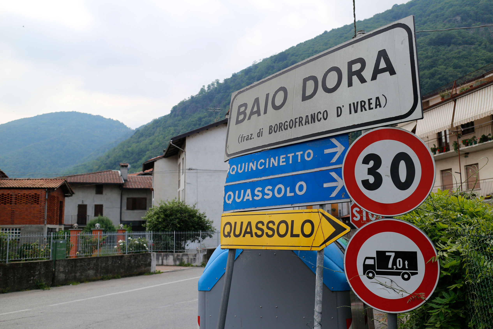
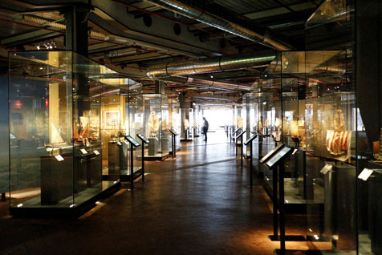
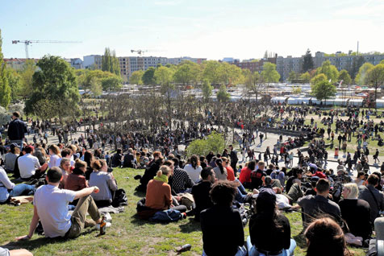
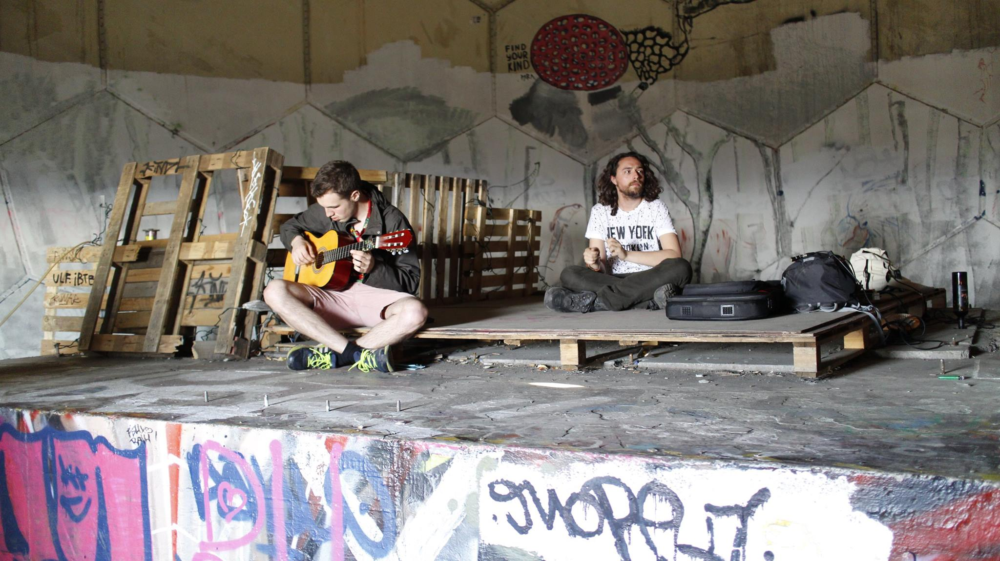
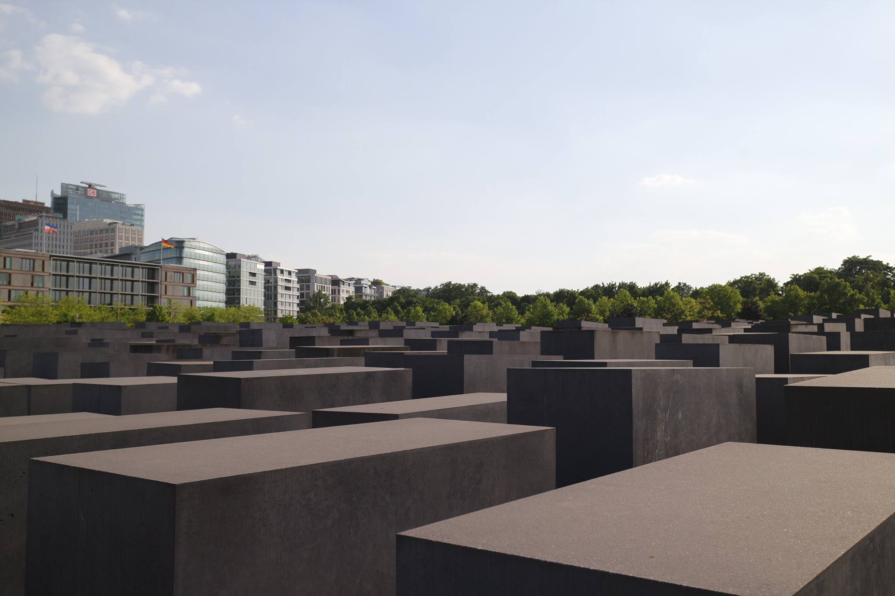

Autumn 2017
Studying abroad was supposedly a "life-changing" experience from what I had heard. I very rarely have this expectation going into any situation, and this was no different. I truly had no conception of what living in this city thousands of miles away from home would be like. Looking back, I didn't have any perspective-shattering realization that would define my life for years to come. That is not to say that I haven't changed from this. It wasn't a new feeling that I had come to experience, but rather something more familiar - home.

My friend Connor and I traveled to his grandmother's home in Baio Dora, a village in the northern countryside of Italy. We joined his family in visting the nearby sights as well as their regular outings. One night, we drove to a small building a few minutes from town to watch his cousins perform in a band concert. We stepped into a brightly lit basement and packed in with the rest of the families to listen. Immersed in the air abuzz with music and standing among the adoring audience, I was reminded of musical performances back home. Here in this small town nestled in a valley draped with vineyards, I felt a strong familiarity in a place that would be otherwise incredibly foreign. Because of Connor's family, we were able to peek past the idyllic curtain of the countryside into the lives of ordinary people.
I dilike being a tourist. It's less so the feeling of alienation and more that there is a reality that is being peddled that bothers me. An experience on rails doesn't really appeal to me, and the compulsion to visit all the sights is simply stressful. Having a whole 3 months in Berlin allowed more room to breath in that respect. I grew to be comfortable there despite the linguistic and cultural obstacles. I traveled thousands of miles only to find home again.

Deutsches Technikmuseum (German Museum of Technology)
Berlin is beautiful and diverse city. Despite the existence of center called "Mitte", Berlin is composed of several different neighborhoods or "Kieze" that were originally separate villages. Thus each area is unique, and there is much to explore everywhere you go. My favorite pastime was walking around the city and doing street photography. It was quite the departure from the suburbs of San Jose. The streets were lined with colorful local businesss and the architecture was distinct. Every walk could feel like a adventure.
I had one of the more surreal experiences there while shopping at a grocery store right by my homestay. As I browsed the produce section, I was able to read the penned label that said "Gurken", which translates to cucumber. That was the moment that clicked in my mind. Learning language changed from being a novelty to a part of my environment. Before this, I had learned Indonesian and Spanish and been to places where that was all around me, but somehow in this moment, I realized that language defined my world rather than just be a detail.

Mauer Park (Wall Park)

Teufelsberg (Devil's Mountain)
Berlin is a city entrenched deeply into the history of those who lived and died here as well as those who still dwell there today. The monuments built and stories told reflect the great struggles and conflicts that occurred there. Even non-natives bring with them their rich and often scarred heritages. In this way, Berlin is sedimentary. It is composed of distinct layers deposited there by shifting conditions that build up into this immense formation. Berlin has made great effort to recognize these events and histories, making these layers naked for all. Despite this heavy tread, the city moves along with vivacity and brightness and never ceases to embrace its storied past and peoples.

Denkmal für die Ermordeten Juden Europas (Memorial to the Murdered Jews of Europe)